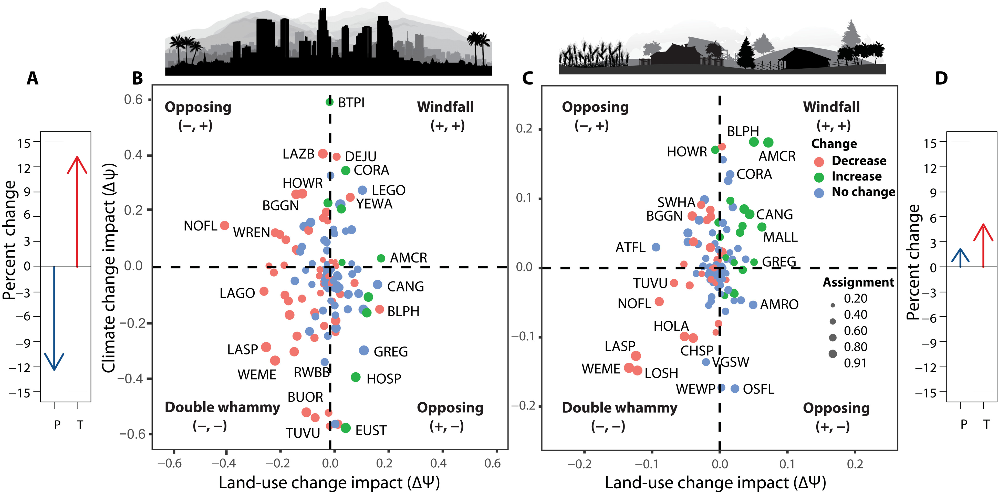
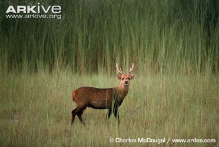
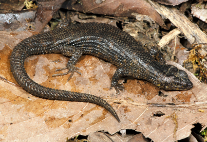
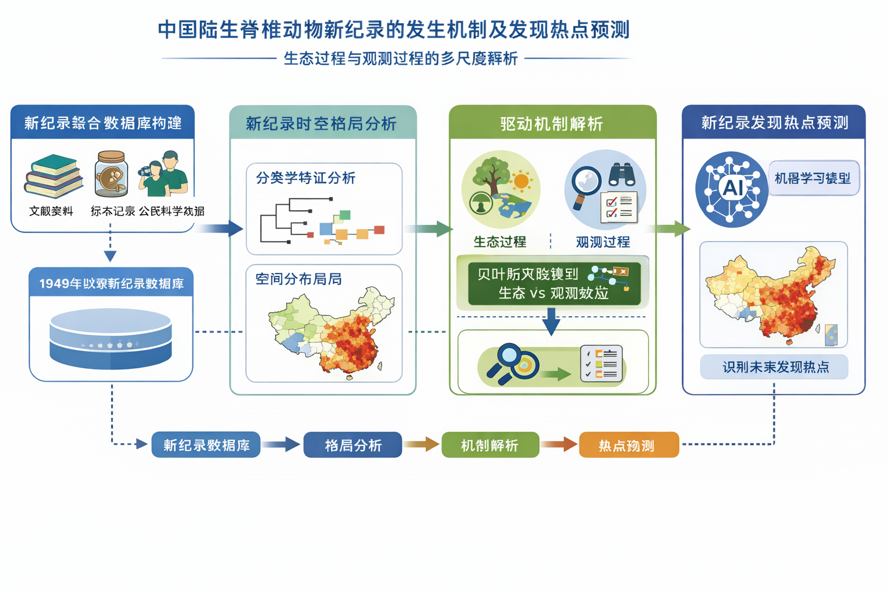
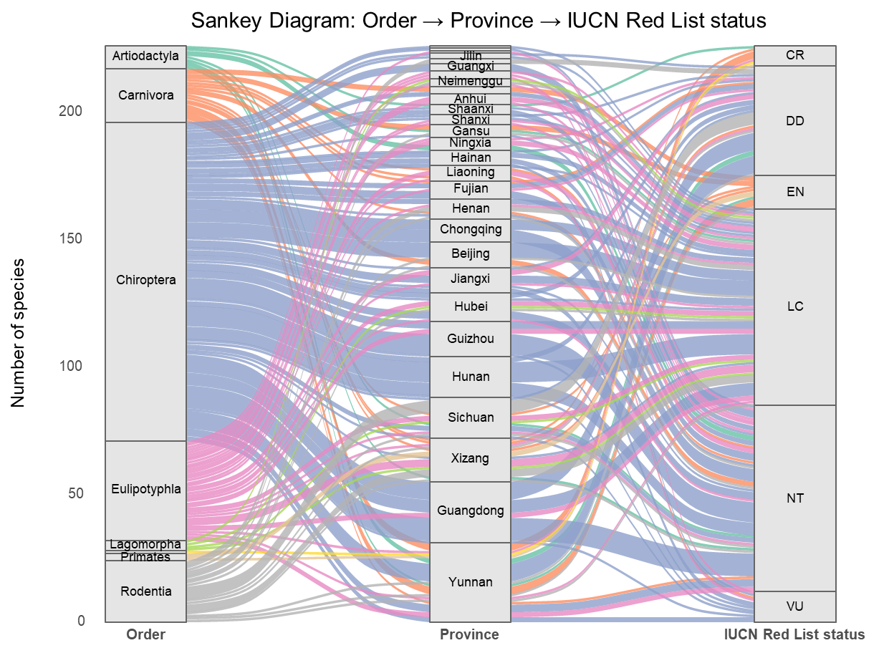
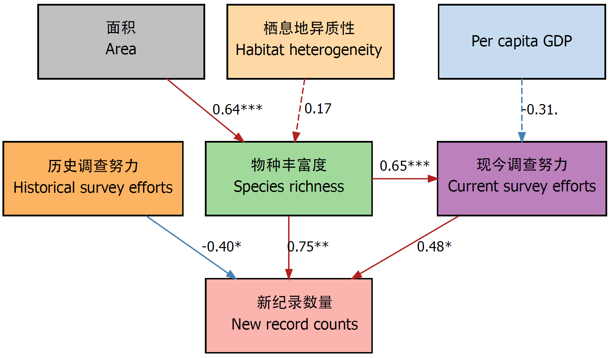
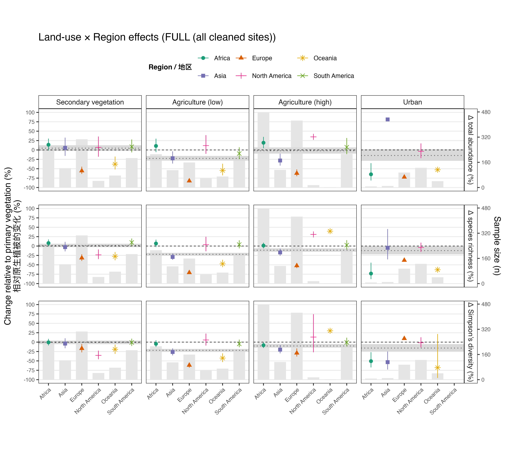
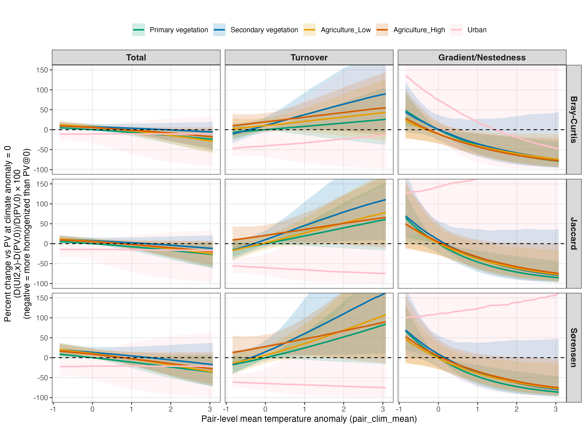
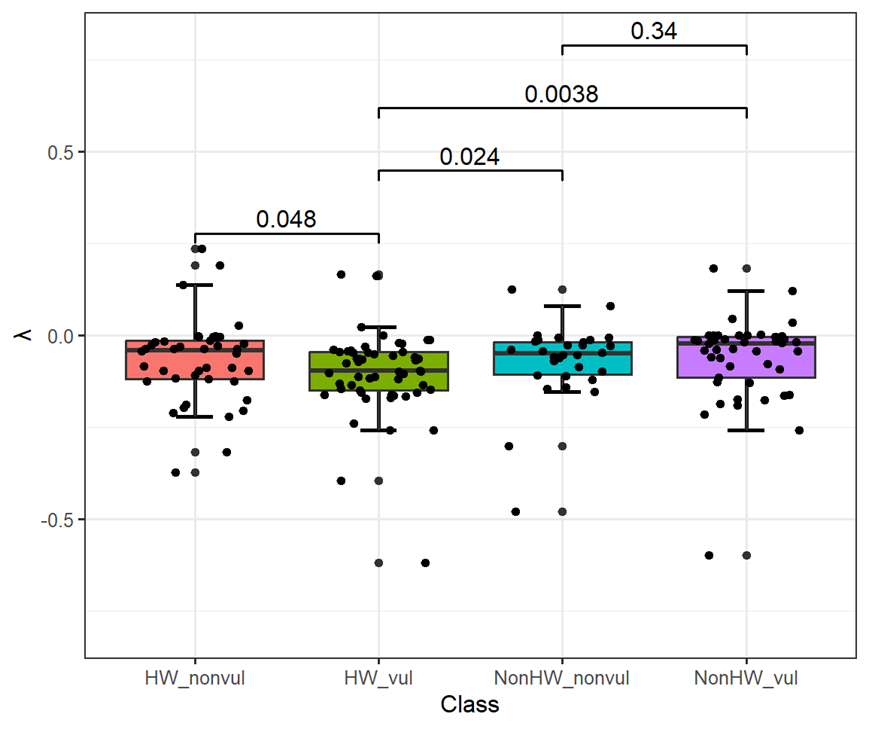
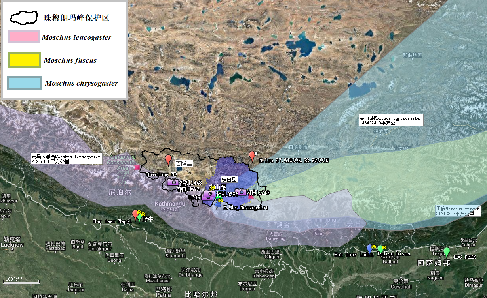

西南山地野外调查
长期在西南山地开展野外样线与相机监测，形成了多物种、多尺度基础观测数据。

Academic Profile
PKU-IIASA国际联合博士后
My interests focus on understanding how environmental changes impact biodiversity (distribution, abundance, richness), how to assess species extinction risks and develop effective conservation priorities, as well as the spatiotemporal distribution pattern of biodiversity and its driving factors, biodiversity monitoring and conservation planning.
当前研究重点包括：中国陆生脊椎动物新纪录发生机制与热点预测、土地利用与气候变化交互作用下的生物多样性响应、 干旱区鸟类热浪脆弱性评估，以及红色名录与物种编目数据的整合应用。
长期在西南山地开展野外样线与相机监测，形成了多物种、多尺度基础观测数据。

聚焦豚鹿、鼷鹿、印度野牛、喜马拉雅麝等边缘种群，关注分布变化与保护空缺。

区分生态过程与观测过程，识别新纪录时空格局并预测未来潜在发现热点。

评估土地利用变化与气候变化对群落结构与多样性指标的协同或拮抗效应。
以下图像均来自你提供的PPT与汇报材料，优先使用本人野外照片与研究结果图；图注为对应研究内容的一句话说明。
当前图谱重点展示豚鹿、鼷鹿、印度野牛、喜马拉雅麝、蜥蜴类新纪录与干旱区鸟类；亚洲象与巨蜥在本页以研究主题和成果图关联呈现。















《中国哺乳动物多样性：编目、分布与保护》（2024，海峡出版社，编委）。 该专著为中国哺乳动物编目与保护评估提供系统性基础。
《中国生物多样性红色名录：脊椎动物（第一卷）—哺乳动物》（2021，研究应用）。 在本人的新纪录与性状数据库研究中，该名录作为关键标准与校核依据。